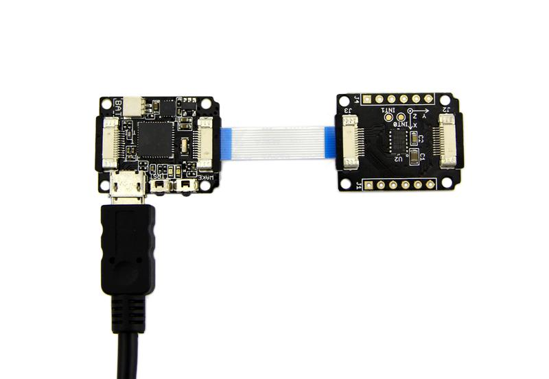
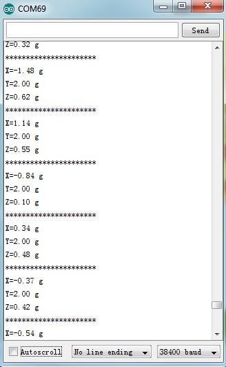
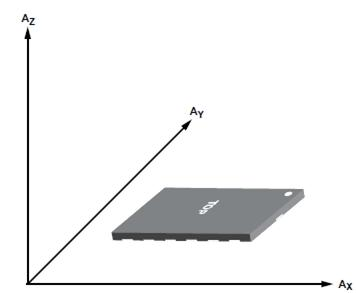
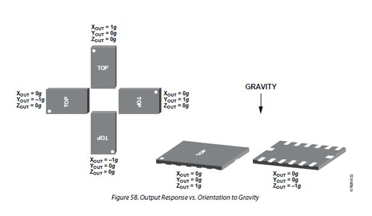

This is a high resolution digital accelerometer with large ±16g measurement range through I2C interface, suit for monitor the motion state. With this module, you can easily add monitoring movements function in your design. Such as arms, legs shaking. If you want to switch your iPhone songs through arm shake, then this module is just for you.
Like other Xadow modules, you need to connect Xadow 3-Axis Accelerometer to Xadow Main Board before upload the test code to Xadow Main Board to get the Accelerometer information.
The hardware Installation:

Note: when connect Xadow 3-Axis Accelerometer to Xadow Main Board, you should concern about the connection direction. The connection method is that the unfilled corner of one Xadow module need to connect to the right angle of another module(see four corners of each Xadow module).
The test code is as shown below:
#include <Wire.h>
#define ADXL345_DEVICE 0x00
#define ADXL345_POWER_CTL 0x2D
#define ADXL345_DATAX0 0x32
#define ADXL345_DATAX1 0x33
#define ADXL345_DATAY0 0x34
#define ADXL345_DATAY1 0x35
#define ADXL345_DATAZ0 0x36
#define ADXL345_DATAZ1 0x37
#define ADXL345_ADDRESS 0x53
int X_Read,Y_Read,Z_Read;
double ax,ay,az;
void setup()
{
Wire.begin();
Serial.begin(19200);
delay(100);
//Turning on the ADXL345
Wire.beginTransmission(ADXL345_DEVICE); // start transmission to device
Wire.write(ADXL345_POWER_CTL);
Wire.write(8); //measuring enable
Wire.endTransmission(); // end transmission
}
void loop()
{
X_Read = readRegister(ADXL345_ADDRESS,ADXL345_DATAX0,ADXL345_DATAX1);
Y_Read = readRegister(ADXL345_ADDRESS,ADXL345_DATAY0,ADXL345_DATAY1);
Z_Read = readRegister(ADXL345_ADDRESS,ADXL345_DATAZ0,ADXL345_DATAZ1);
/*Serial.print("The X,Y,Z Value are:");
Serial.print(X_Read);
Serial.print(" , ");
Serial.print(Y_Read);
Serial.print(" , ");
Serial.println(Z_Read); */
getAcceleration();
Serial.print("X=");
Serial.print(ax);
Serial.println(" g");
Serial.print("Y=");
Serial.print(ay);
Serial.println(" g");
Serial.print("Z=");
Serial.print(az);
Serial.println(" g");
Serial.println("**********************");
delay(500);
}
int readRegister(int deviceAddress,int address1,int address2)
{
long int value;
int readValue1,readValue2;
Wire.beginTransmission(deviceAddress);
Wire.write(address1); // register to read
Wire.write(address2); // register to read
Wire.endTransmission();
Wire.requestFrom(deviceAddress,2); // read two byte
if(Wire.available()<=2)
{
readValue1 = Wire.read();
readValue2 = Wire.read();
}
//Wire.endTransmission();
readValue2 = readValue2<<8;
value= readValue1 + readValue2;
delay(100);
return value;
}
void getAcceleration()
{
double gains;
//Boring accelerometer stuff
gains = 0.00390625;
ax=X_Read * gains;
ay=Y_Read * gains;
az=Z_Read * gains;
}
After uploading code, open the serial monitor to obverse the test result. The outputs of this sensor are 3-axis acceleration info which is converted into the unit of gravity, "g".

Below are two figures that can help you understand the physical meaning of the results.
The first figure is about the direction of each axis:

The second figure gives some examples:
